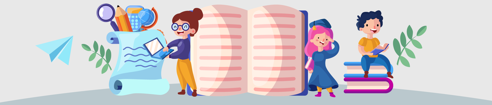
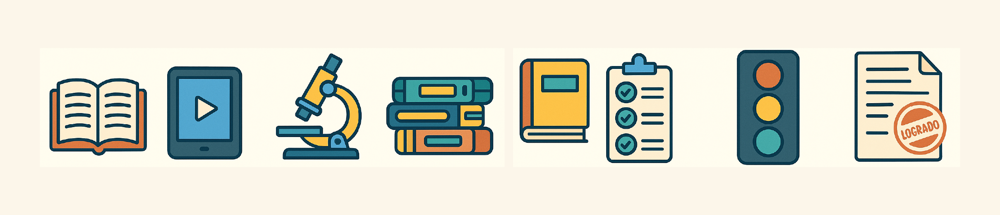

Información General del Proyecto
Matemáticas (Estadística - ÉNFASIS), Tecnología e Informática (ÉNFASIS), Ciencias Sociales, C. Naturales (opcional), Ingeniería (procesos), Artes.

5. Idea/Tema Central del Proyecto

Los estudiantes se convertirán en "científicos de datos" de su institución. Mediante un proceso de investigación estadística, identificarán un aspecto relevante de la vida escolar que pueda ser estudiado y mejorado. Diseñarán y aplicarán instrumentos, procesarán datos, calcularán medidas estadísticas básicas, y crearán representaciones visuales para comunicar hallazgos y proponer recomendaciones.
6. Descripción del Problema o Desafío

En nuestra escuela, las decisiones se basan a menudo en impresiones y no en evidencia. La falta de habilidades para manejar datos limita nuestra capacidad para proponer soluciones informadas.
Pregunta Problematizadora Central:
¿Cómo podemos, como estudiantes investigadores, utilizar la estadística y la tecnología para recolectar, analizar y visualizar datos significativos sobre nuestra vida escolar, comprenderla mejor, comunicar hallazgos y proponer acciones de mejora?
Desafío Específico:
Identificar un tema escolar relevante. Diseñar un plan de investigación estadística simple (instrumento, muestra, análisis de datos con medidas de tendencia central, presentación visual) y proponer una mejora basada en evidencia.
7. Objetivo General del Proyecto
Desarrollar en los estudiantes habilidades de pensamiento estadístico y alfabetización de datos, mediante un ciclo de investigación sobre un fenómeno escolar, usando herramientas matemáticas y tecnológicas, para fomentar decisiones informadas y participación activa.
Objetivos Específicos y Habilidades del Siglo XXI
8. Objetivos Específicos de Aprendizaje
Matemáticas (Estadística)
- OE1: Formular preguntas estadísticas claras. (Hab: Pensamiento Crítico, Comunicación)
- OE2: Diseñar y aplicar instrumentos de recolección. (Hab: Creatividad, Alfabetización de Datos)
- OE3: Organizar datos en tablas de frecuencia; calcular frecuencias/porcentajes. (Hab: Alfabetización de Datos)
- OE4: Calcular e interpretar medidas de tendencia central. (Hab: Pensamiento Crítico, Alfabetización de Datos)
- OE5: Crear e interpretar gráficos (barras, circulares). (Hab: Comunicación, Alfabetización de Datos, Creatividad)
- OE6: Formular conclusiones y recomendaciones. (Hab: Pensamiento Crítico, Resolución de Problemas)
Tecnología e Informática
- OE7: Utilizar herramientas digitales para datos. (Hab: Alfabetización de Datos, Pensamiento Computacional)
- OE8: Evaluar pertinencia de herramientas tecnológicas. (Hab: Pensamiento Crítico)
Habilidades del Siglo XXI Desarrolladas
- Pensamiento Crítico
- Resolución de Problemas
- Colaboración
- Comunicación
- Creatividad e Innovación
- Alfabetización de Datos
- Pensamiento Computacional
Fases y Actividades Detalladas del Proyecto
9. Fases o Etapas del Proyecto
- Fase 1: ¡Detectives Escolares! – La Chispa de la Curiosidad (1 Semana)
- Fase 2: El Plan Maestro – Diseño de la Investigación (1.5 Semanas)
- Fase 3: ¡A Recolectar! – Trabajo de Campo (1.5 Semanas)
- Fase 4: Hablan los Números – Procesamiento y Análisis de Datos (2 Semanas)
- Fase 5: ¡Eureka! Comunicando Hallazgos y Proponiendo Soluciones (2 Semanas)
10. Actividades Detalladas por Fase
Fase 1: ¡Detectives Escolares!
- Actividad 1.1 (Inmersión): "¿Para qué sirven los datos?".
- Actividad 1.2 (Explorando): "Radares Escolares".
- Actividad 1.3 (Pregunta): "El Arte de Preguntar".
Fase 2: El Plan Maestro
- Actividad 2.1 (Variables y Población).
- Actividad 2.2 (Diseño del Instrumento).
- Actividad 2.3 (Prueba Piloto).
Fase 3: ¡A Recolectar!
- Actividades de recolección y organización inicial.
Fase 4: Hablan los Números
- Actividades de tabulación, cálculo y graficación.
Fase 5: ¡Eureka!
- Actividades de interpretación, propuestas y "Foro".
Recursos Necesarios, Evaluación y Productos
11. Recursos Necesarios
Papel para encuestas, fichas, cartulinas, marcadores, etc.
Computadores, internet, software de hoja de cálculo, opcional: herramientas online para encuestas/gráficos, proyector.
12. Evaluación del Proyecto
Diagnóstica: Preguntas iniciales, interpretación de gráfico.
Formativa: Revisión de preguntas, instrumentos, recolección, tablas, gráficos. Retroalimentación.
Sumativa: Informe de Investigación (40%), Presentación (30%), Calidad del Proceso (20%), Trabajo en Equipo (10%).
13. Producto(s) Final(es)
- Informe de Investigación Estadística Escolar.
- Presentación Visual de Hallazgos.
- Instrumento de Recolección de Datos Diseñado.
14. Vinculación con el Contexto y la Comunidad
Temas de relevancia escolar, voz estudiantil, propuestas de mejora, "Foro de Guardianes de Datos Escolares", desarrollo de ciudadanía activa.
Rúbrica de Evaluación Detallada
| Criterio de Evaluación | Nivel Bajo (1.0-2.9) | Nivel Básico (3.0-3.9) | Nivel Alto (4.0-4.5) | Nivel Superior (4.6-5.0) |
|---|---|---|---|---|
| 1. Formulación de Pregunta y Diseño de Investigación | Pregunta confusa... | Pregunta algo clara... | Pregunta clara... | Pregunta perspicaz... |
| 2. Recolección y Organización de Datos | Datos insuficientes... | Datos mínimamente suficientes... | Datos suficientes y relevantes... | Datos de buena calidad... |
| 3. Análisis Estadístico | No calcula o calcula erróneamente... | Calcula algunas medidas con errores... | Calcula correctamente... | Calcula con precisión... |
| 4. Visualización y Comunicación | No presenta gráficos... | Gráficos básicos con errores... | Gráficos claros y correctos... | Visualizaciones creativas y efectivas... |
| 5. Conclusiones y Recomendaciones | No extrae conclusiones... | Conclusiones débiles... | Conclusiones válidas... | Conclusiones profundas... |
| 6. Uso de Herramientas Tecnológicas | No utiliza o uso deficiente... | Intenta usar con dificultad... | Utiliza adecuadamente... | Utiliza eficientemente... |
| 7. Trabajo en Equipo | Poca participación... | Participación desigual... | Buena colaboración... | Excelente colaboración... |